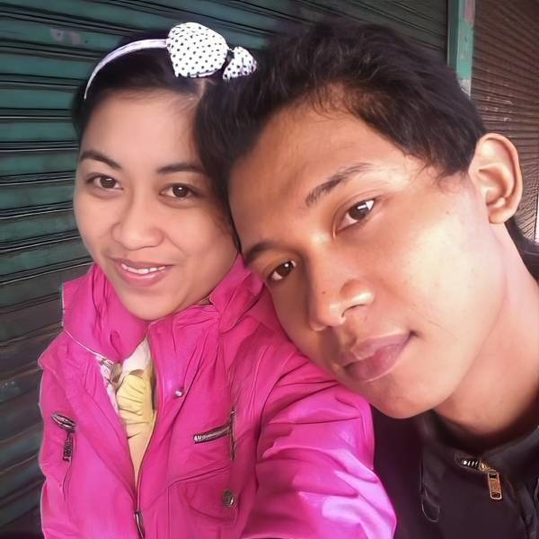
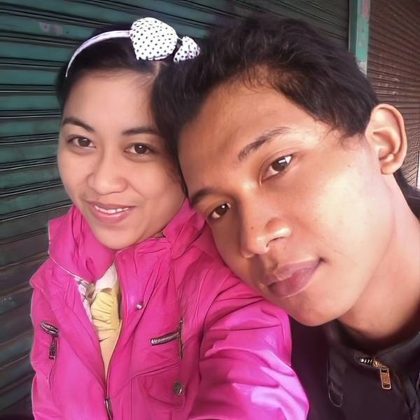

MOMEN TERINDAH BAGI KAMI
Momen terindah dalam pernikahan adalah ketika dua jiwa yang saling mencintai bersatu dalam ikatan suci, disaksikan oleh orang-orang terkasih. Ini adalah awal dari perjalanan baru yang penuh harapan, impian, dan komitmen untuk saling menjaga, mendukung, dan mencintai seumur hidup.
Namun, momen terindah dalam pernikahan sebenarnya tidak selalu tentang hal-hal yang tampak mewah atau meriah. Momen-momen sederhana seperti saling berpegangan tangan, bertukar pandangan penuh cinta, atau berbagi tawa bersama, juga bisa menjadi momen yang sangat berharga dan tak terlupakan.
Pada akhirnya, momen terindah dalam pernikahan adalah momen yang dipenuhi dengan cinta, kebahagiaan, dan rasa syukur. Momen di mana kedua mempelai menyadari bahwa mereka telah menemukan belahan jiwa dan siap menjalani kehidupan bersama dalam suka maupun duka.


 
